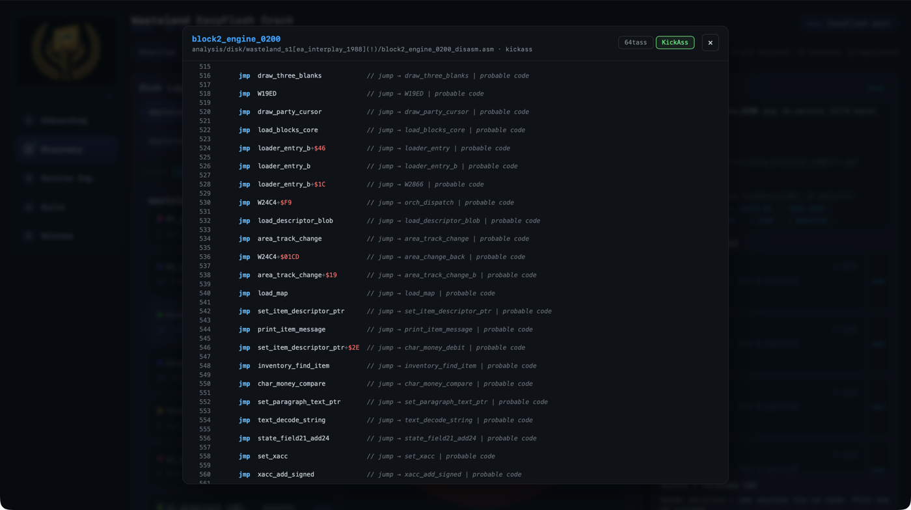

Control flow and data access
Edges cover calls, jumps, branches, reads, writes, indirect accesses, pointers, and observed execution.
C64RE turns C64 media into verified source, a typed 6502 graph, and project knowledge.
An LLM client operates C64RE through MCP. Tools own the bytes. TRX64 Runtime supplies execution evidence.
LLM/API-first
C64RE exposes listings, graph queries, annotations, evidence, and verification. The connected LLM supplies interpretation and semantic work.
Tool authorityExtraction, disassembly, graph construction, traces, assembly, and byte comparison.
Agent responsibilityInterpretation, semantic naming, contracts, hypotheses, knowledge mining, and evidence selection.
Nodes hold program objects. Typed edges record control flow, data access, evidence, and unknown paths.

Edges cover calls, jumps, branches, reads, writes, indirect accesses, pointers, and observed execution.
Contracts record inputs, outputs, clobbers, preserved state, stack effects, arguments, and unresolved exits.
change_impact follows callers, shared state, pointer tables, claims, timing evidence, and unknown paths.
Artifact analysis runs in seven phases.
Create or resume the project. Select the workflow profile.
Import media. Identify programs. Preserve lineage.
Extract, scan, disassemble, build the graph, classify, annotate, and verify.
Run targeted traces where static evidence is insufficient.
Export source, knowledge, evidence, open questions, and byte comparisons.
Each component exposes a machine-callable interface.
Analyze / MCP
Imports media, builds the graph, stores annotations, and verifies rebuilt output.
Execute / JSON-RPC + Rust
Runs reversible C64, 1541, and 1581 models for inspection and automation.